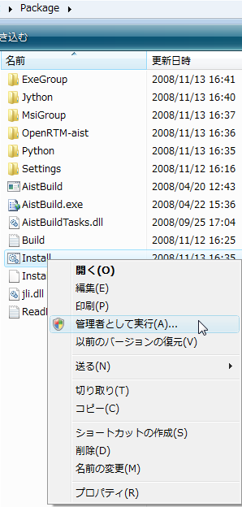
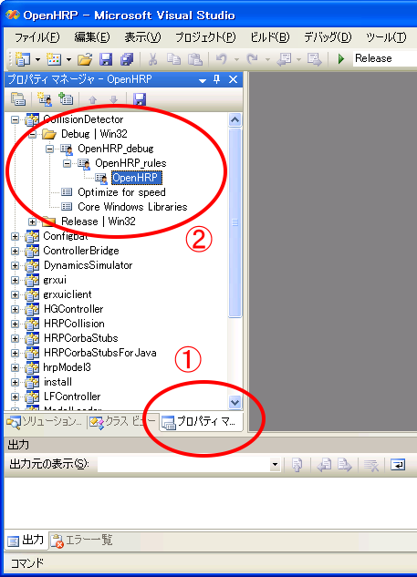
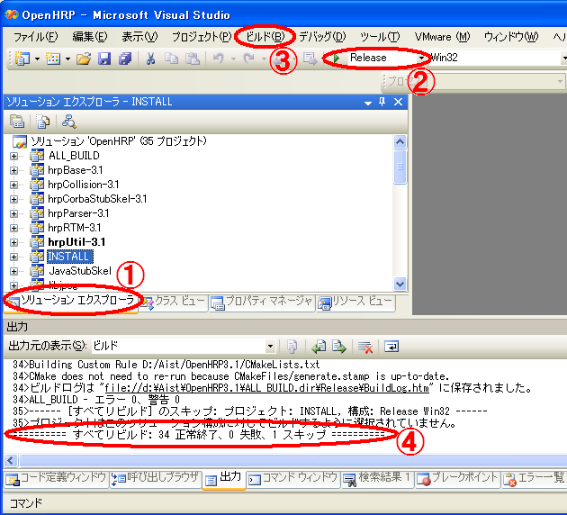

環境構築
まず、以下の手順で
OpenHRPのコンパイル/実行に必要なソフトウェア
をインストールしていきます。
いずれのソフトウェアも、バージョン等が合うものをすでにインストールされている場合は、それをお使いいただければ結構です。
それぞれのインストール先も、お好みに合わせて変えてもかまいません。
ただし、インストール先がインストーラのデフォルトでない場合には、
下記で説明するコンパイル時のプロパティを
インストール先に合わせて設定しなければならないことにご注意ください。
Visual C++ コンパイラのインストール
Windows 用の C++ コンパイラは Visual C++ 2008 に対応しています。
(バージョン 3.0.0 より、Visual C++ 2005 には対応しておりませんので、ご注意ください。)
マイクロソフトより無償配布されている Express Edition も使用可能です.
Express Edition をご使用の場合、下記のリンクからダウンロードしてインストーラの案内に従って
インストールしてください。インストーラの設定項目は特に変更しなくてもOKです。
JDK のインストール
http://java.sun.com/のJava SE のダウンロードページより、
JDKのWindows版をダウンロードしてください。
JDKのバージョンは今のところ JDK5, JDK6 系列で動作を確認しています。
ダウンロードしたファイルを実行すると、JDKのインストーラが起動しますので、
インストーラの案内に従ってインストールしてください。
インストーラの設定項目は特に変更しなくてもOKです。
その他の依存ソフトウェアの導入
OpenHRPバージョン3.0.3より上述以外の依存ソフトウェアをまとめてダウンロード・インストールする、
環境構築インストーラを開発しました。新規にシステムへ導入される場合、当サイトの
「関連ソフトウェアのダウンロード」にて；
個別にインストールする場合は、「Windowsにおける依存
ソフトウェアのインストール」を参考にして、以前のように各個インストールしてください。
Package-1.0.1.zipをダウンロードして解凍するとPackageディレクトリが展開されます。
Packageディレクトリ内の install.cmd、
.¥Package¥Install.cmd
を実行すれば依存ソフトウェアをダウンロードしてインストールします。
ただし、OSがVistaの場合、図１のように管理者権限で実行してください。

図１：管理者権限実行
途中図２のPyYAMLのインストーラーがGUIとして起動します。
特に設定項目を変更する必要はないのでデフォルトのまま"次へ"のボタンや"完了"ボタンを押下してください。

図２：PyYAMLインストーラ
インストールが正常に終了すると、

図３：正常終了
のように表示して終了します。
インストールが正常に終了したらPackageディレクトリを削除しても構いません。
以上の作業でインストールされる依存ソフトウェアは以下の通りです。
- OpenRTM-aist Ver.1.0.0-RELEASE
- python Ver.2.4.4
- PyYAML Ver.3.05
- Jython Ver.2.2.1
- tvmet Ver.1.7.2
- CLAPACK Ver.3.1.1
- Boost Ver.1.35.0
当サイトの「OpenHRP3 本体のダウンロード」
で承諾ボタンを押下していただいて、OpenHRPのソースアーカイブをダウンロードし適当なディレクトリ
に解凍してください。
（注）
OpenHRP ホームディレクトリーのパスにユニコード文字(マルチバイト文字)などが含まれていると実行中
に不具合が発生しますので、展開先のパス名にはユニコード文字(マルチバイト文字)、カンマ、スペース、カッコが含まないような
展開先を選択してください。（特に「デスクトップ」などのところにおくとパスにユニコード文字が含まれて
しまいますのでご注意ください。）
Visual C++ によるコンパイル
プロパティシートのコピー
OpenHRPを展開したディレクトリに移動して、
copyprops.batを開きます(図４)。
環境変数 RTM_ROOT の値によってrtm_config.vspropsファイルのコピー元のディレクトリが決定されます。
rtm_config.vspropsがディレクトリ上にコピーされます(図４)。
図４：rtm_config.vspropsのコピー
使用するOpenRTMのバージョンを切り替える場合は、
Windows環境でOpenRTM-aist-0.4.2とOpenRTM-aist-1.0.0を切り替えて使用する方法
を参考にして再度このセクション以下の作業を行なってください。
プロジェクトファイルのオープン
OpenHRPを展開したディレクトリに移動して、
OpenHRP.slnを開きます（図４）。

図５：起動先
図５のように Visula Studio 上で OpenHRP のプロジェクトを開きます。
コンパイル用プロパティ設定
- プロパティマネージャーを選択し、
- ‘＋’記号をクリックしてツリーを展開し、OpenHRPをダブルクリックします。

図６：プロパティマネージャ
図７のプロパティページが表示されます。
図７：プロパティページ
インストールしたライブラリ等の参照先を設定します。
- ユーザマクロを選択します。
- マクロの値を、インストールしたソフトウェアのバージョンやインストール先に合わせて設定します。
そのために以下の各設定項目についての説明を参考にしてください。
| 実行方法に関する設定項目 |
|---|
| DYNAMICS_ENGINE |
使用する動力学サーバの選択。ut (東大版), aist (産総研版) のいずれかを指定します。（※） |
| NS_HOST |
ミドルウェア(CORBA,OpenRTM)のネームサーバのホストです。通常は localhost です。（※） |
| NS_PORT |
ミドルウェア(CORBA,OpenRTM)のネームサーバのポート番号です。通常は初期値です。（※） |
| J3D_REND |
Java3Dのレンダラーを指定します。空白の場合はOpenGLを使用することになります。DirectX3Dを使用する場合は、-Dj3d.rend=d3d をセットしてください。（※） |
| プログラミング言語環境に関する設定項目 |
|---|
| JDK_DIR |
JDKのインストール先ディレクトリ。（※） |
| JYTHON_DIR |
Jythonのインストール先ディレクトリ。(jython.jarがあるディレクトリ)（※） |
| ライブラリに関する設定項目 |
|---|
| J3DHOME |
Java3Dのインストール先ディレクトリ。空白の場合は同名の環境変数に %OPENHRPHOME%/client/gui/Java3D/1.4.1/Windows を代入します。（※） |
| JMFHOME |
JMFのインストール先ディレクトリ。空白の場合は同名の環境変数に %OPENHRPHOME%/client/gui/JMF2.1.1e/Windows を代入します。（※） |
| OB_DIR |
omniORBのインストール先ディレクトリ。 |
| OMNIORB4_LIBVER |
omniDynamic ライブラリファイルのバージョン番号
例：omniORB-4.1.2 の場合 '412'
|
| OMNI_TRDVER |
omnithread ライブラリファイルのバージョン番号
omniORB-4.0.7 の場合 '32'
omniORB-4.1.2 の場合 '33'
|
| BOOST_INC_DIR |
boostライブラリのインクルードパス。 |
| BOOST_LIB_DIR |
boostライブラリのライブラリファイルパス。 |
| TVMET_DIR |
tvmetライブラリのインストール先ディレクトリ |
| CLAPACK_DIR |
CLAPACKのインストール先ディレクトリ |
| OPENRTM_DIR |
OpenRTM-aist のインストール先ディレクトリ |
| OPENRTM_LIBVER |
OpenRTM-aist ライブラリファイルのバージョン番号
Ex：OpenRTM-aist-0.4.2 -> 042 |
| 作業先に関する設定項目 |
|---|
| INSTALL_DIR |
OpenHRPのヘッダーファイルやライブラリのコピー先を指定します。
OpenHRPのホームディレクトリでよければ、$(SolutionDir)のままにしておきます。 |
（※）： 運用時の変更は、bin/dos/config.batで行ないます。
- ＯＫボタンを押して設定を保存します。
なお、上記のプロパティの設定は、OpenHRPソースフォルダトップにある "OpenHRP.vsprops" というXMLファイルに
記述されていますので、Visual C++ のIDEを起動する前にこのファイルを直接編集してもOKです。
ビルドの実行
プロパティを正しく設定できたら、以下のようにしてビルド（コンパイル）できます。

図８：ビルド
- ソリューションエクスプローラを選択します。
- Releaseを選択します。
- ビルドメニューからソリューションのビルドを選択します。
- ビルドが開始され結果が表示されます。
最後に、
========== ビルド: 29 正常終了、0 失敗、1 更新、0 スキップ ==========
などと表示されます。失敗が０ならば成功です。
バージョンによってはこの正常終了数が異なることがありますが、失敗が０である点が重要です。
正常にコンパイルできなかった場合、環境構築が
正しくできているかを確認してください。
その際、Visual C++ の「エラー一覧」ウィンドウを表示させて、
具体的なエラー内容をチェックするとよいでしょう。
(「エラー一覧」ウィンドウは、メニューの「表示」-「その他のウィンドウ」-「エラー一覧」を
クリックすることで、通常Visual C++ウィンドウの下部に「出力」などと並んで表示されます。）
ビルドに成功したら、サンプルシミュレーションの実行
を行って、正常にビルドできていることを確認してください.
また、INSTALL_DIRで指定したディレクトリにはOpenHRPのライブラリが生成されています。
今後OpenHRPを利用したプログラムを作成・実行するときのために、パスを通しておくとよいでしょう。